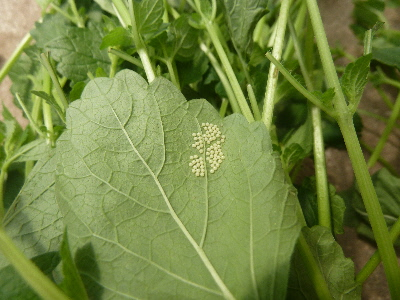
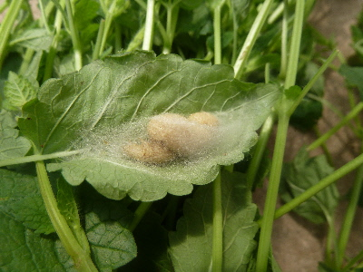
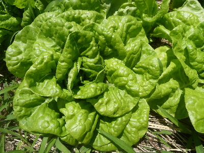
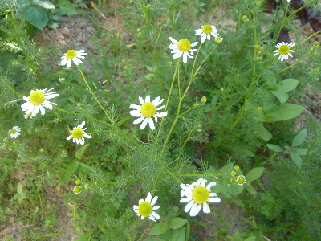

最近レモンバームがお気に入りですが、...
2018/06/24
レモンバームのお茶が最近気に入っててよく飲んでます。
今日も沢山収穫しました。

虫の卵かな。幼虫になる前に収穫できてよかった。

これは何でしょうね。
害虫が育つ前にドンドン収穫しようと思いました。
2018/06/24
レモンバームのお茶が最近気に入っててよく飲んでます。
今日も沢山収穫しました。

虫の卵かな。幼虫になる前に収穫できてよかった。

これは何でしょうね。
害虫が育つ前にドンドン収穫しようと思いました。
2018/06/16
近頃レタスが大量に収穫出来ています。

そのままだとかさばって大量に食べれないので、塩コンブ、キムチ、ドレシング、ダシ醤油とかに漬けて小さくして食べてます。
今のところ飽きずに美味しく食べてます。
2018/06/02
小さいのがあちこちあったので、今年は沢山収穫できるかも？って思っていたんですが、株が大きくなりませんでした。

ちょっと収穫するのも面倒なので、今年は収穫するのをやめます。
種を採って秋に蒔こうかとも思うんですが、せっかく蒔くなら新しい種を買った方がいいかも？なんて思っています。
でも秋になったらカモミールのことを忘れて、種まきを忘れてしまいそうだな。
過去の日記
畑仕事じゃないよ。